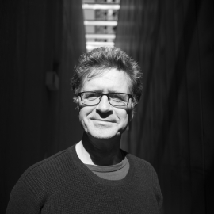

AUTORES
Postill, John
John Postill

Información General
John Postill (PhD, UCL) es Vicepresidente de Investigación en la Universidad RMIT de Melbourne y Miembro de Antropología Digital en la University College London (UCL). Sus publicaciones incluyen Localizing the Internet (2011), Media and Nation Building (2006) y el volumen coeditado Theorising Media and Practice (2010, con Birgit Bräuchler). Actualmente está escribiendo un libro titulado Tecnólogos de la libertad: activismo digital y cambio político a principios del siglo XXI, y el volumen coeditado Theorising Media and Change (con Elisenda Ardèvol y Sirpa Tenhunen)
“Soy antropólogo (PhD, UCL) especializado en el estudio de los medios. Vivo en Melbourne (Australia) donde soy profesor titular de comunicación en la Universidad RMIT. Antes de esto, fui Vicepresidente Senior de Investigación (2013-2016) en RMIT. También soy miembro del Programa de Antropología Digital en el University College London (UCL).
A lo largo de los años, he trabajado en varios campos (incluyendo el mundo académico, el periodismo, la enseñanza y la traducción) y he vivido en España, Gran Bretaña, Indonesia, Japón, Alemania, Malasia, Rumania y ahora Australia. Anteriormente, obtuve becas de investigación en la Universidad de Cambridge, la Universidad de Bremen y la Academia de Arte y Diseño en Londres y enseñé en la Universidad Sheffield Hallam, la Escuela de Estudios Orientales y Africanos (SOAS) de Londres, la Universidad de Staffordshire y la Escuela Nacional de Ciencia Política y Administración (SNSPA) en Bucarest.
En 2010-2011, pasé un año como Senior Fellow en el Instituto Interdisciplinario de Internet (IN3), Universidad Abierta de Cataluña, Barcelona. Donde trabajaba con Sarah Pink, especialmente en relación con los indignados (IN3) # 15M) y movimientos de ocupación.
Mi primer libro, Media and Nation Building, publicado por Berghahn en 2006. Este estudio explica cómo los Iban, un pueblo indígena de Borneo, han participado en una parte integral del proyecto de construcción de la nación de Malasia desde su independencia en 1963. Mi segundo libro, Localizing Internet, basada en el trabajo de campo entre los activistas de Internet en la Península de Malasia, se publicó en 2011 (ver reseña). The Rise of Nerd Politics (Londres: Plutón), y el volumen coeditado Theorising Media and Conflict (con Philip Budka y otros) ha sido editado por Birgit Bräuchler titulado Theorising Media and Practice (2010) Birgit Bräuchler). A partir de 2018, quiero comenzar a trabajar en la historia antropológica de los medios de comunicación modernos y la comunicación titulada provisionalmente Los efectos culturales de los medios de comunicación.
A través de estos diferentes proyectos de investigación hay un gran interés en cómo explicamos la relación entre los medios y el cambio sociocultural desde perspectivas tanto etnográficas como históricas.A lo largo de mi crrera he estudiado los medio no de forma aislada, sino como comlejas y cambiantes configuraciones de personas, tecnología, prácticas y acciones, que solo pueden ser entendidas en sus contextos historicos, geográficos y culturales específicos. Soy escéptico, por lo tanto, de las cuentas escritas en el presente continuo donde las cosas están perpetuamente cambiando pero nunca cambian realmente.
Soy el editor, junto con Mark A. Peterson, de la Serie de Antropología de los Medios de Berghahn, el coordinador de la Red de Antropología de los Medios de la AESA y miembro del Consejo Editorial de Antropología Hoy.
El objetivo de este blog es publicar los materiales de dominio público en los que estoy trabajando como parte de mi actividad de investigación bajo el amplio tema de la antropología de los medios. La idea es mantener a los colegas, estudiantes y otros aprendiendo sobre mi trabajo. Como puede quedar fácilmente oculto en mis registros personales.
John Postill” (Traducido)
-(Página del autor) https://johnpostill.com/about-me/
Bibliografía en Español
Entrevistas
Entrevista Dr. John Postill en su visita a Lima(Perú) - Mav, PUCP (Subtítulos en Español)
Notas
-